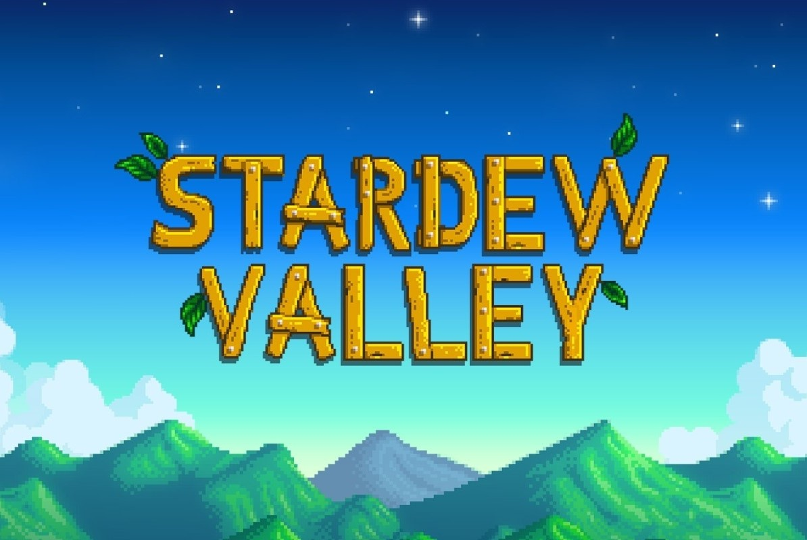

Onze favoriete game
Gian Carlo Jansen
Pokemon White 2, de bedoeling is dat je 8 badges verzameld door de loop van het spel heen waarbij je tijdens je playthrough een team moet maken van de pokemon die jij leuk vind om te gebruiken
Pokemon White 2 is mijn favorite game omdat het 1 van de eerste spellen is die ik als kind heb uitgespeeld en is sinds dien altijd bij mij blijven hangen, dit zorgde er ook voor dat ik andere pokemon spellen ook wou spelen en sinds toen ben ik niet meer gestopt met de games

Jack van Bommel
Mijn favoeriete game is Uncharted 4: A thief's end. Dit is de 4e main game in de serie Uncharted. Het Gaat over een Nathan Drake, een schatzoeker met heel veel ongeluk waardoor hij altijd in schietgevechten terecht komt.
Dit is mijn favoriete game voor veel redenen. Toen ik in 2016 mijn Playstation 4 kocht was dit de eerste game die ik had. Het was liefde op het eerste gezicht. De omgevingen in de game waren geweldig, bad guys neerschieten in Noord-Schotland midden in de sneeuw onder een oud Kathedraal of met een auto rondrijden op Madagaskar terwijl ik puzzels oplos en overal rondklim is geweldig.
Tijdens het spelen voelt het alsof je Indiana Jones bent en ik zal er nooit genoeg van krijgen.

Sofie Brink
Mijn favoriete game is KSP (Kerbal Space Program), een game uit 2011 waarin je controle hebt over het ruimtevaart programma van de kerbals. De kerbals zijn kleine groene, mensachtige aliens die nergens bang van zijn.
De game heeft de mogelijkheid om mijn eigen ruimtevaartprogramma op te zetten, waarbij ik mijn kerbals naar andere planeten kan sturen en onderzoek kan laten doen. Ook is KSP een game die zeer makkelijk modbaar is en dus kan ik mijn hobby van programmeren dus ook aan KSP toepassen. Dit maakt KSP een unieke game die mij urenlang kan bezighouden omdat er zoveel verschilende dingen te doen zijn.

Stacey Peters
Mijn favoriete game is Stardew Valley. Je speelt als een boer of boerin die de boerderij van zijn/haar opa overneemt na zijn dood. Naast de boerderij is er ook een dorpje waar mensen wonen en projecten verkopen.
Stardew Valley is mijn favoriete game omdat het me een gevoel geeft van vrede en ontspanning terwijl ik me bezig houd met het verbeteren van mijn boerderij en het opbouwen van relaties met de personages in het dorp. Het spel biedt een mooie afwisseling van het planten en oogsten van gewassen, het verzamelen van grondstoffen in de bergen en het vissen in de rivier. De muziek is prachtig en past perfect bij de sfeer van het spel. Het verhaal is eenvoudig, maar het gaat over het vinden van je plek in de wereld en het opbouwen van een gemeenschap. Ik hou ook van de verschillende personages in het spel en het feit dat je relaties met hen kunt opbouwen door hen cadeaus te geven en met hen te praten. Elk personage heeft zijn eigen unieke verhaal en persoonlijkheid, en het is leuk om te ontdekken hoe ze in het verhaal passen.
